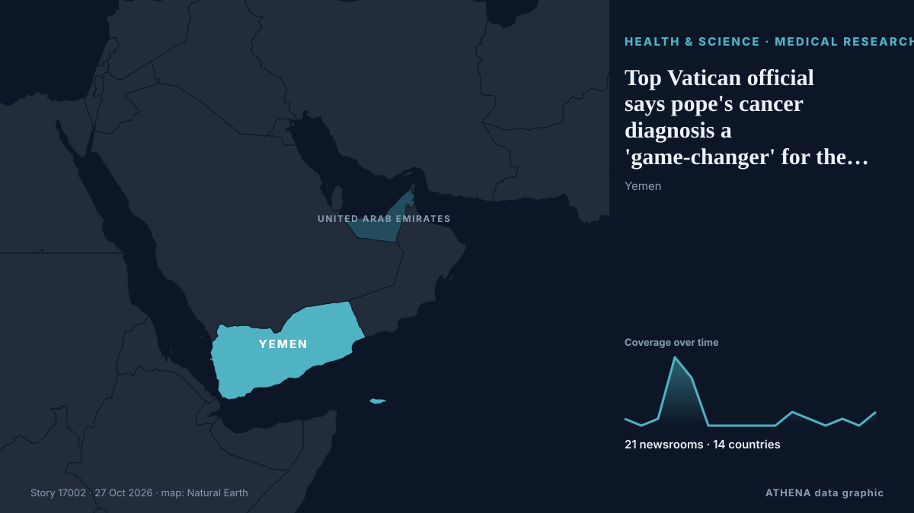

Top Vatican official says pope's cancer diagnosis a 'game-changer' for the papacy

A top Vatican official says that Pope Leo XIV's lung cancer diagnosis is “a bit of a gamechanger” for the Vatican. from ABC News (International)
Reported independently by 21 outlets in 14 countries since 20 Oct, first by Oman Observer; coverage is quiet now. ATHENA rates the risk low (1.4/10), driven mainly by the severity of the harm described and its geographic and sector reach. Confidence is 93% (high), with 21 independent outlets corroborating it and an average source reliability of 78%.
Why it matters: Health and science developments can change public-health risks, research priorities and regulation.
What changed: 2 new reports from 2 newsrooms in the 24 hours to 27 Oct.
First reported as: Pope Leo needs no further cancer treatment after lung surgery
At a glance
Selected, scored and written by ATHENA's published methodology. No editor intervenes in individual events. How this is produced ›
| 20 Oct 02:25 UTC | 1 |
|---|---|
| 20 Oct 14:25 UTC | 0 |
| 21 Oct 02:25 UTC | 1 |
| 21 Oct 14:25 UTC | 10 |
| 22 Oct 02:25 UTC | 7 |
| 22 Oct 14:25 UTC | 0 |
| 23 Oct 02:25 UTC | 0 |
| 23 Oct 14:25 UTC | 0 |
| 24 Oct 02:25 UTC | 0 |
| 24 Oct 14:25 UTC | 0 |
| 25 Oct 02:25 UTC | 2 |
| 25 Oct 14:25 UTC | 1 |
| 26 Oct 02:25 UTC | 0 |
| 26 Oct 14:25 UTC | 1 |
| 27 Oct 02:25 UTC | 0 |
| 27 Oct 14:25 UTC | 2 |
| 22 Oct 07:05 UTC | 0.0 |
|---|---|
| 25 Oct 15:18 UTC | 1.6 |
| 27 Oct 20:15 UTC | 1.4 |
Why these numbers
Importance
Risk
Confidence
The reporting — who reported it, and when
headline as published · opens the original- Oman Observer · OmanWhy so many people still are not screened for lung cancer
- RTÉ News · IrelandPope Leo needs 'no further treatment' after lung surgery
- Fox News (World) · United StatesPope Leo XIV needs no further cancer treatment after lung tumor removed, doctors say
- NBC News (World) · United StatesPope Leo won’t require further treatment after lung surgery, doctors say
- CBC News · CanadaPope needs no further treatment for lung cancer, his doctors say
- PBS NewsHour · United StatesPope Leo's tests show he needs no further treatment for lung cancer, his doctors say
- CBS News (World) · United StatesPope Leo won't need more treatment after cancer surgery, doctors say
- NBC News (World) · United StatesPope Leo's doctors say he no longer needs cancer treatment after surgery
- Global News (World) · CanadaPope Leo needs no further treatment for lung cancer: Vatican
- The New York Times (World) · United StatesPope Needs No Further Treatment for Lung Cancer, Doctors Say
- NBC News (World) · United StatesPope Leo needs no further cancer treatment after lung surgery
- DW English · GermanyPope Leo will not need further cancer treatment — Vatican
- Express Tribune · PakistanDoctors confirm Pope Leo XIV requires no further treatment after lung surgery
- Punch · NigeriaPope won’t require further treatment for lung cancer – Vatican
- Gulf News · United Arab EmiratesPope Leo’s lung tumour confirmed as localised, no further treatment needed
- ANSA English · ItalyPope needs no further treatment after lung-cancer surgery say doctors
- ANSA English · ItalyPope needs no further treatment after lung-cancer surgery say doctors
- Anadolu Agency (English) · TurkeyDoctors confirm Pope Leo XIV requires no further treatment after lung surgery
- Indian Express · IndiaPope Leo XIV’s cancer diagnosis: What doctors found and why further treatment is not required
- The Straits Times · SingaporePope Leo calls for Yemen violence to end, in address two weeks after surgery
- Al-Monitor · United StatesPope Leo calls for Yemen violence to end, in address two weeks after surgery
- The Jerusalem Post · IsraelPope Leo calls for Yemen violence to end, in address two weeks after surgery
- BBC News · United KingdomPope's South American trip to go ahead as planned after lung cancer surgery
- The Straits Times · SingaporePope’s cancer a ‘gamechanger’ for papacy, Vatican foreign minister says
- ABC News (International) · United StatesTop Vatican official says pope's cancer diagnosis a 'game-changer' for the papacy